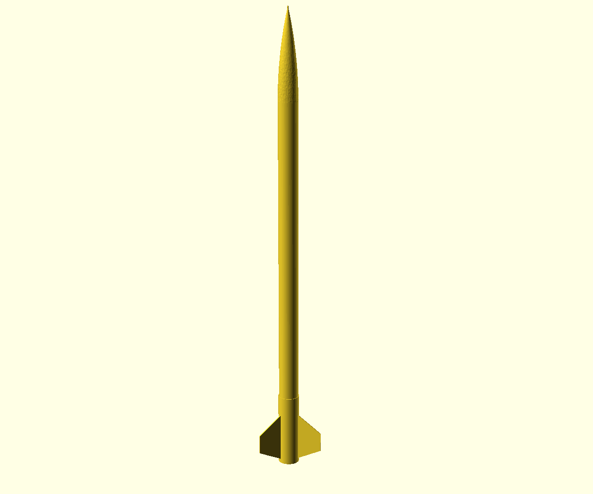

Documentation
Eleven paired DOCX/PDF guides, including the Master Build Book, safety guide, and inspection records.
BRAIZ Works™ / Independent educational project / Day 08 X01
The digital engineering package is complete for its released scope. The physical article has not been built or flown.
ZIP download · Verify against SHA-256 checksums

Evidence status
The released files document a design. Physical outcomes require separate measurement and testing.
No measured flight performance or performance guarantee is claimed. Read the full scope and safety boundary.
The release
Start with the reading guide, then move into the files most relevant to your question.
Eleven paired DOCX/PDF guides, including the Master Build Book, safety guide, and inspection records.
STEP, STL, and 3MF geometry with drawings, renders, and a bill of materials.
OpenRocket artifacts and trajectory outputs labeled as predictions.
Public claim, rights, and source records for the released materials.
Reading route
This digital release does not authorize a build or launch. Independently verify current site rules, applicable law and safety codes, certified commercial motors, and appropriate supervision.
A17 Lunar Explorer is independent and is not affiliated with, sponsored by, approved by, or endorsed by NASA. It is not an official NASA, Artemis, or SLS replica.